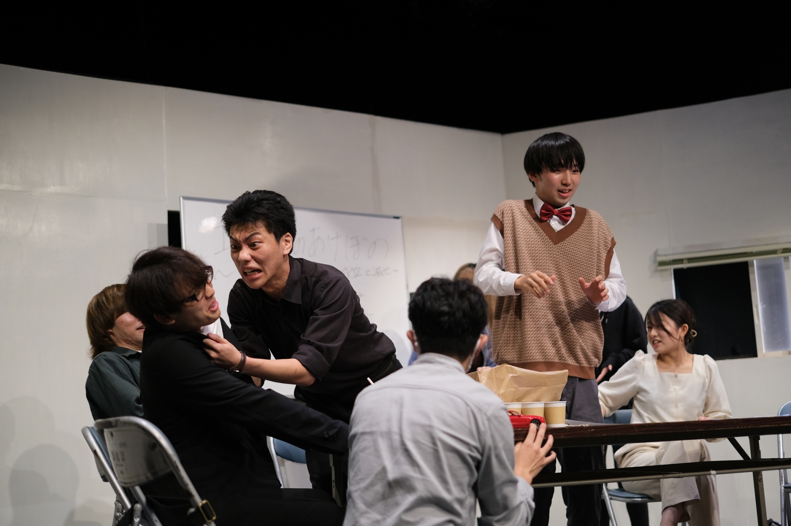
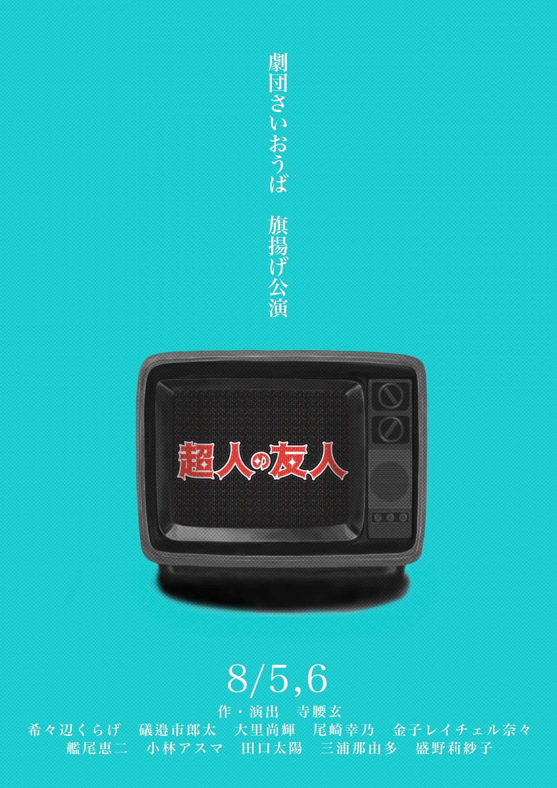
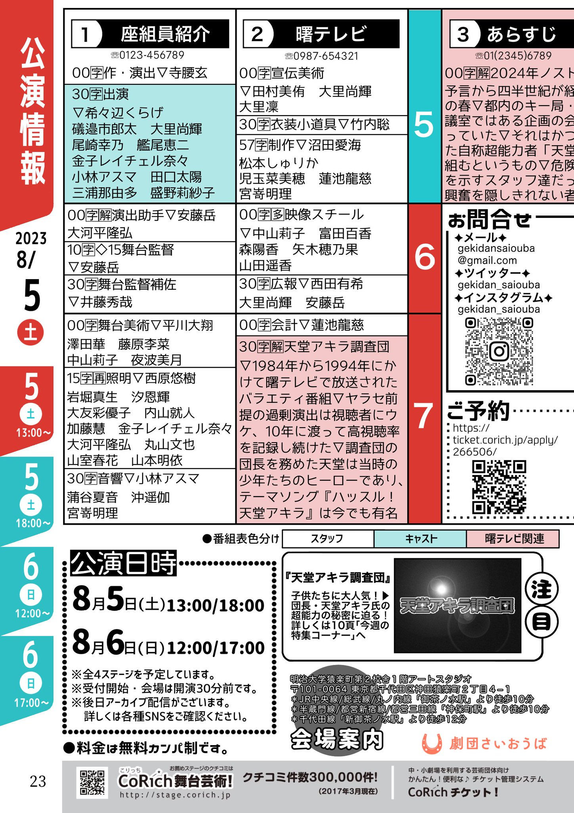

第一回公演「超人の友人」

―――イカサマと呼ばれたその超能力者は、目の前で物を浮かせてみせた。
あらすじ
2024年、ノストラダムスの大予言から四半世紀が経過したある日の春。都内のキー局、曙テレビの会議室ではある企画の会議が持ち上がっていた。それは、かつて栄華を誇った自称超能力者「天堂旭」の特集を組むというもの。危険な内容に難色を示すスタッフ達だったが、実はその超能力には裏が「なかった」―――。
作品紹介
記念すべき劇団さいおうばの旗揚げ公演となる作品。第一回にもかかわらず観客動員数は満員御礼の入りであり、劇団の躍進の第一歩となった作品と言えるだろう。しかし、本作は休憩込みで約二時間半という大ボリュームで、以降、寺腰が周囲から「話は短くまとめろ」と詰められる要因となった。サイコキネシスで空に飛ばされる紙袋やひとりでに動き出すラジコンなど、非常に労を要する演出が多かったのも特徴。
【作・演出】
寺腰玄
【出演】
希々辺くらげ
礒邉市郎太
大里尚輝
尾崎幸乃
金子レイチェル奈々
艦尾恵二
小林アスマ
田口太陽
三浦那由多(劇団さいおうば)
盛野莉紗子
【スタッフ】
演出助手
安藤岳 大河平隆弘
安藤岳 大河平隆弘
舞台監督
安藤岳
安藤岳
舞台監督補佐
井藤秀哉
井藤秀哉
舞台美術
平川大翔 澤田華 藤原李菜 中山莉子 夜波美月
平川大翔 澤田華 藤原李菜 中山莉子 夜波美月
音響
小林アスマ 蒲谷夏音 沖遥伽 宮嵜明理
小林アスマ 蒲谷夏音 沖遥伽 宮嵜明理
照明
西原悠樹 岩堀真生 汐恩輝 大友彩優子 内山就人 加藤慧 金子レイチェル奈々 山本明依 大河平隆弘 丸山文也 山室春花
西原悠樹 岩堀真生 汐恩輝 大友彩優子 内山就人 加藤慧 金子レイチェル奈々 山本明依 大河平隆弘 丸山文也 山室春花
宣伝美術
田村美侑 大里尚輝 大里凜
田村美侑 大里尚輝 大里凜
衣装・小道具
竹内聡
竹内聡
制作
沼田愛海 松本しゅりか 児玉菜美穂 蓮池龍慈 宮嵜明理
沼田愛海 松本しゅりか 児玉菜美穂 蓮池龍慈 宮嵜明理
映像スチール
中山莉子 富田百香 森陽香 矢木穂乃果 山田遥香
中山莉子 富田百香 森陽香 矢木穂乃果 山田遥香
会計
蓮池龍慈
蓮池龍慈
広報
西田有希 大里尚輝 安藤岳
西田有希 大里尚輝 安藤岳
【会場】
アートスタジオ(明治大学猿楽町第2校舎1F)

